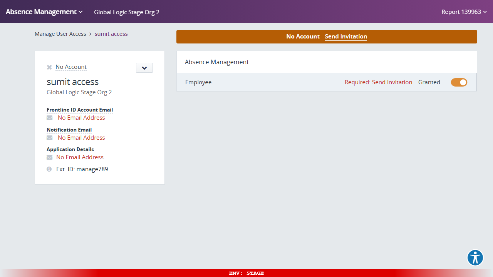
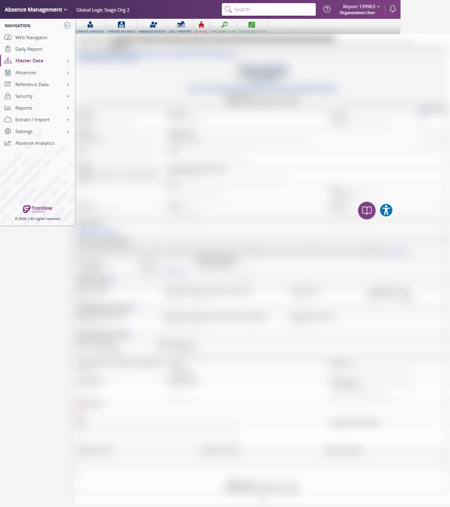

Execution 7 · Employee Manage Access
tests/navigation/manage-access.md · Video 7:57–9:00
7
Execution
7:57–9:00
Continuous-video range
Unattended safe mode
Execution mode
Scenario outcome
manage789 resolved to sumit access (work_id 9344210); the Stage Manage User Access page showed the matching identity, organization, Absence Management Employee role, and Granted status, then returned to the same record.
Continuous video evidence
Screenshot evidence
{kind=link}

{kind=link}

Complete test structure
Source: tests/navigation/manage-access.md
# Manage Access ## Execution directive Before any browser action, read: 1. `instructions/project-instructions.md` 2. `instructions/application-details.md` 3. `instructions/test-data.md` Execute this scenario directly in Chrome using browser automation. Do not generate test code. Save the execution report under `reports/`. Reuse the same authenticated Chrome session and controlled tab throughout the scenario. This is a read-only validation: do not edit the employee, change access, send an invitation, or submit any form. ## Objective Verify that an authenticated AES Stage organization user can navigate from Employee General Information to the Stage **Manage User Access** page for employee identifier `manage789` and confirm that the displayed access belongs to the correct employee. ## Preconditions - Work only in AES Stage and its linked Stage applications. - The signed-in account is the approved AES Stage organization user. - The Employee General Information selection page is available through **Master Data > Employee > General Information**. - Search identifier: `manage789`. - Manage-access link XPath: `//a[contains(text(),'Manage User’s Access')]`. - Do not select **Send Invitation** or change any access setting. ## Steps 1. Open AES Stage and authenticate when required using the approved test account. - Expected: The AES Stage navigation is visible. - Expected: The organization context is `Global Logic Stage Org 2`. 2. Navigate through **Master Data > Employee > General Information**. - Expected: The Employee selection page opens. - Expected: The page title is `Employee | Select Employee (139963)`. - Expected: **Add Employee**, the employee search field, and **Go** are visible. 3. Enter `manage789` in the employee search field and select **Go**. - Expected: The Employee General Information record opens. - Expected: The URL contains a numeric `work_id`. 4. Verify the selected employee before continuing. - Expected: The page title is `Employee | General Information (139963)`. - Expected: Employee name is `sumit access`. - Expected: Identifier is exactly `manage789`. - Expected: **Access Granted** is checked. - Record: The numeric employee `work_id`. 5. Locate the access link using XPath `//a[contains(text(),'Manage User’s Access')]`. - Expected: Exactly one matching link is present and visible. - Expected: The link text is **Manage User’s Access**. - Expected: Its destination uses the Stage host `supersuitawsstage.flqa.net`. - Expected: The destination user key is `2-<employee work_id>`. 6. Select **Manage User’s Access**. - Expected: The Stage Manage User Access destination opens successfully. - Recovery: If a transient route error appears while the application initializes, reload once and reassess the final visible state. 7. Verify the Manage User Access page. - Expected: **Manage User Access** is visible. - Expected: Employee name is `sumit access`. - Expected: `Ext. ID: manage789` is visible. - Expected: Organization is `Global Logic Stage Org 2`. - Expected: **Application Details** identifies `Absence Management`. - Expected: User role/type is `Employee`. - Expected: Access status is `Granted`. - Expected: No visible application, permission, or page-not-found error remains. 8. Confirm the validation remained read-only. - Expected: No invitation was sent. - Expected: No employee or access data was edited or submitted. 9. Return to the original Employee General Information page using browser **Back**. - Recovery: If the cross-application route does not restore through browser Back, navigate to the exact Employee General Information URL captured in step 4. Do not guess or change the `work_id`. - Expected: The title returns to `Employee | General Information (139963)`. - Expected: The URL contains the same `work_id` recorded before opening Manage User Access. - Expected: Employee name is `sumit access` and identifier is `manage789`. - Expected: Leave this original Employee General Information page open for operator review. ## Result classification - **PASS:** The correct `manage789` employee opens, the supplied Manage User’s Access link resolves to the matching Stage user key, and the destination shows the expected employee, organization, application, role, and `Granted` status without a visible error. - **FAIL:** The employee or user key does not match, required access details are absent, access is not granted, or an application error remains after one reload. - **BLOCKED:** Authentication, permissions, browser availability, or missing employee data prevents safe validation. ## Report requirements Record: - Start and finish timestamps - Environment URLs without credentials or tokens - Employee search value - Employee name, identifier, and numeric `work_id` - Employee General Information URL and title - Supplied XPath match count, link text, and Stage destination host - Manage User Access URL and title - Displayed organization, application, role/type, and access status - Whether a single recovery reload was required - Visible-error check - Successful return to the same Employee General Information record - Confirmation that no invitation was sent and no data was changed - Overall status: PASS, FAIL, or BLOCKED Never record passwords, tokens, cookies, or browser-session information. ## Cleanup Return to and leave the original Employee General Information page open. Do not change access, send an invitation, edit the employee, or sign out when another authenticated scenario may follow.
Safety and cleanup
No password, token, cookie, or authentication fragment is included. Unattended safe mode did not create, update, or delete persistent staging records.